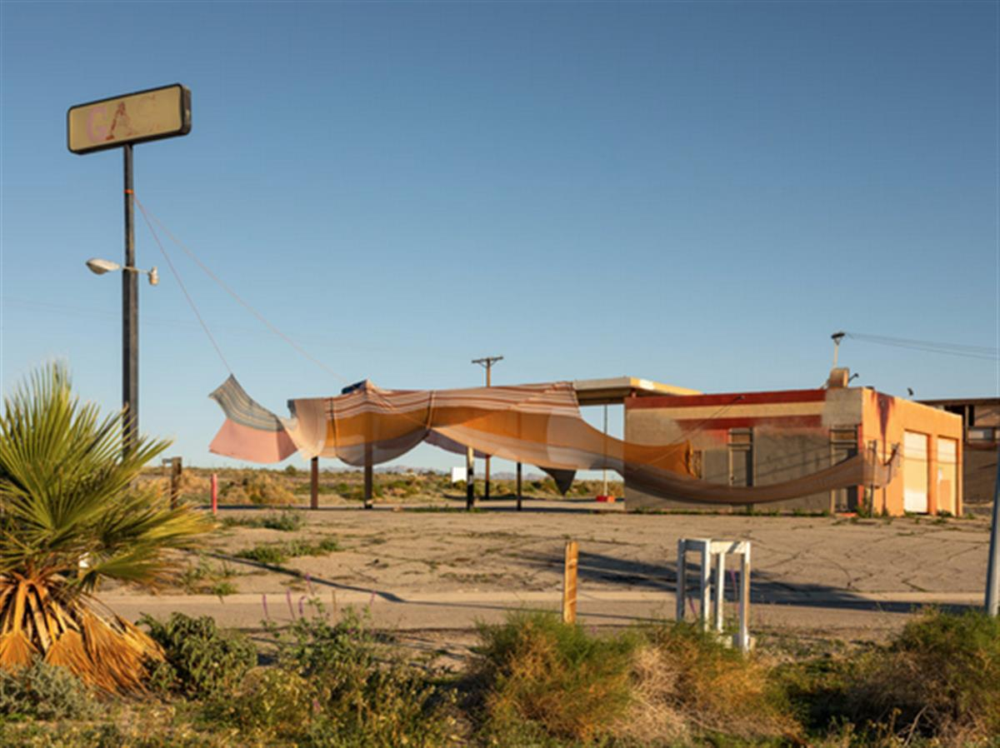
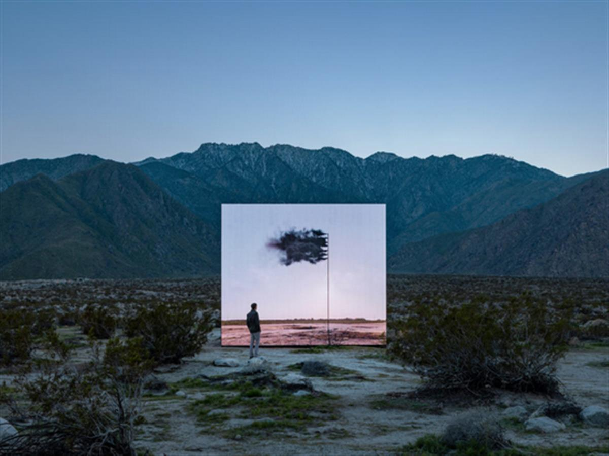
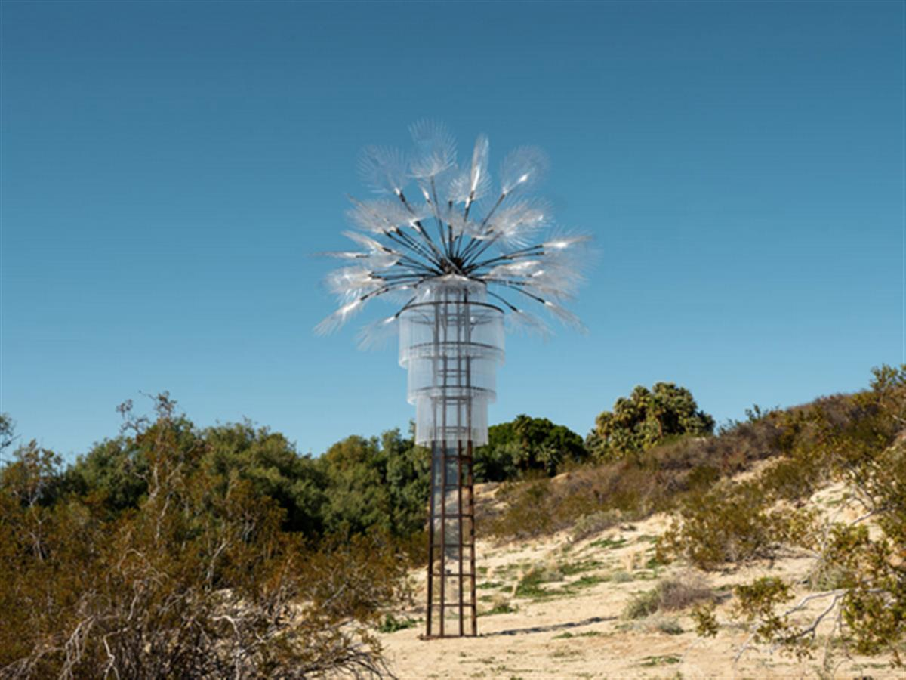
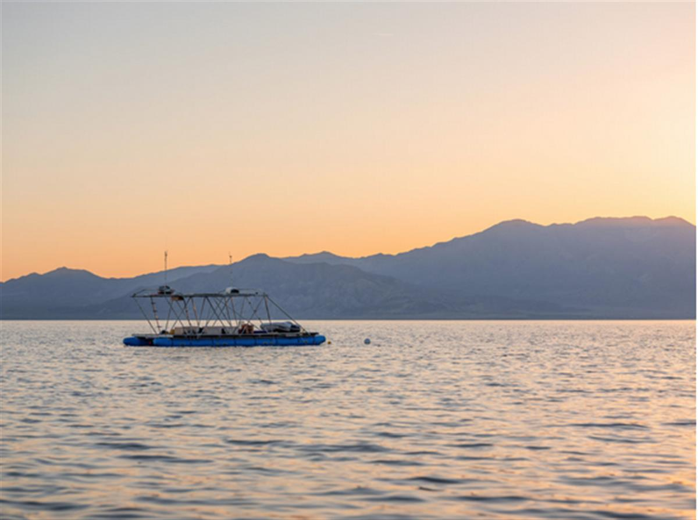
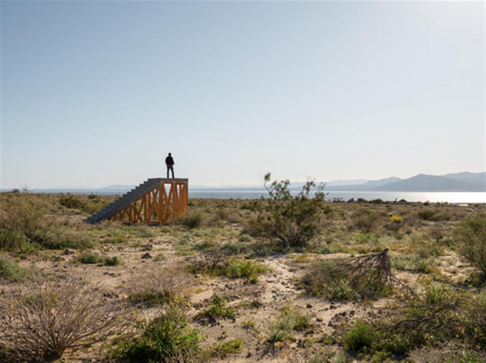
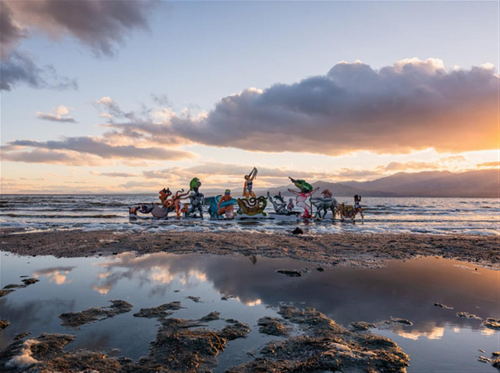
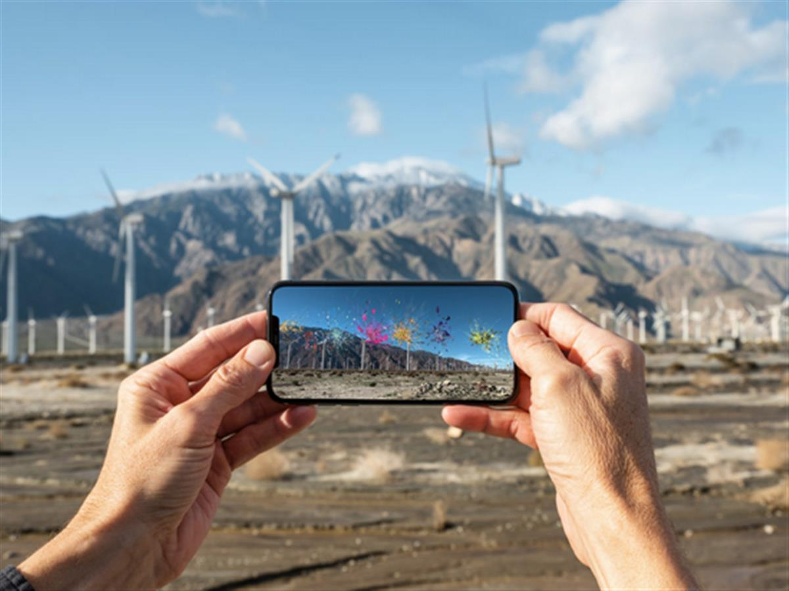
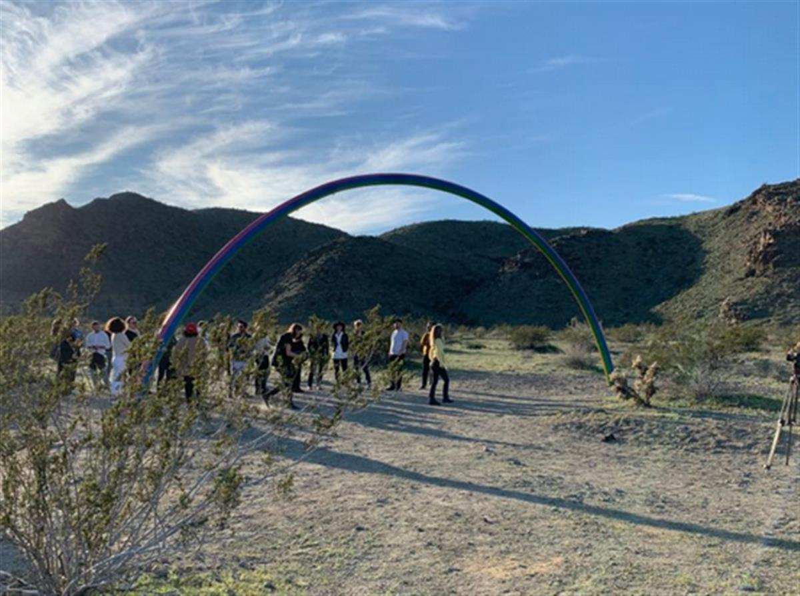
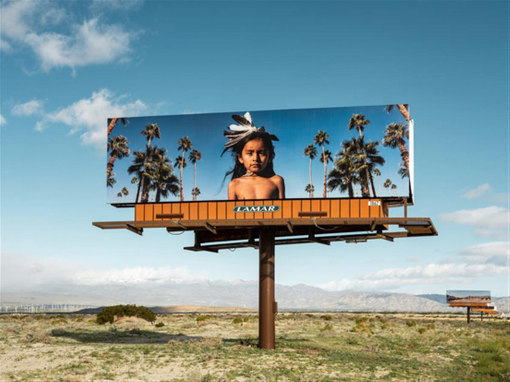
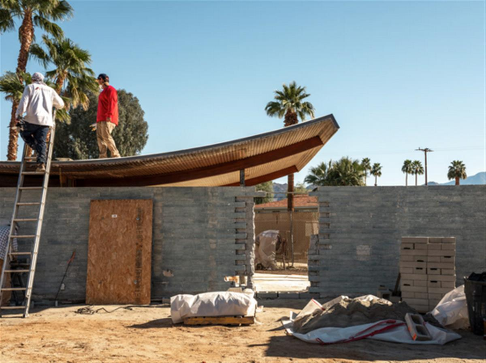

Superflex, Dive-In (2019) at Desert X. Photo by Lance Gerber.
The sprawling biennial tackles the inevitability of environmental change head-on.
Sarah Cascone, February 12, 2019
Visiting Desert X 2019, the enormous art biennial spread over 55 miles of southern California’s Coachella Valley, is a real undertaking. To see all the works by the 18 artists included in the show, scattered across the desert sands, you’ll almost certainly need more than a day. But the rewards for the intrepid art traveler who undertakes the challenge are considerable.
Artistic director Neville Wakefield and curators Matthew Schum and Amanda Hunt have organized the exhibition with a thoughtful eye toward the history of the desert. There are works that tap into the rich culture of the region’s indigenous people; art that acknowledges the desert as a site of nuclear testing; an homage to California’s famed mid-century Modern architecture; and even a piece that builds on the tradition of 20th century Land art.
There’s also the ever-present palm tree, recreated in clear materials for Kathleen Ryan’s eerily beautiful, chandelier-like Ghost Palm. The plastic pieces of this kinetic work—which Hunt describes as “a sound piece in ways we didn’t anticipate”—act as wind chimes in the breeze. Meanwhile, that California icon, the gas station, has been transformed by Eric N. Mack into a billowing canopy of 2,300 feet of multicolored fabric (donated by Italian fashion house Missoni) to surprisingly painterly effect.
It’s all set against a dramatic vista, craggy mountains, some capped in snow, all rising beyond the flat sands dotted with scrubby greens and the occasional burst of wild flowers. The verdant green lawns outside Sunnylands—home to Iman Issa’s elegant sculpture of an oil refining facility (which was once a film prop)—are an exception. Her work seems to condemn both the fossil fuel industry and the unnecessary use of water to transform the desert into an unnaturally greener landscape.

Eric N. Mack, Halter (2019). Courtesy of the artist. Photo by Lance Gerber.
The Planet in Crisis
The looming specter of climate change is a recurring theme in the exhibition (which is sponsored, in part, by the electric car company Evelozcity) and the works here regularly criticize human mistreatment of the planet. The curatorial team’s decision to spotlight these issues was wise, and the extreme desert environment reflects the fragility of planet earth as a whole.
One standout piece is John Gerrard’s Western Flag, a massive video screen that superimposes a digital landscape against the actual one, with a flagpole spewing noxious-looking black smoke representing carbon monoxide. The land surrounding the flag is a digital recreation of Spindletop, Texas, where the discovery of oil in 1901 triggered the Texas oil boom.
“Carbon monoxide is invisible, so it’s about giving it an image,”Gerrard said at the Desert X preview, noting that the animation is based on a computer simulation of gas under pressure, and that gas released from a pole normally would fly straight up, rather than stream outward like a banner. The piece isn’t supposed to represent the American flag, he explained, but a “flag for all society” in recognition of “the transnational risks of climate change

John Gerrard, Western Flag (2019) at Desert X. Photo by Lance Gerber.
For Superflex, climate change is more than a risk. There’s a reason that Dive-In—a massive, bubblegum pink architectural structure—resembles the colorful castles that decorate fish tanks, or porous pieces of coral. In introducing the piece, the Danish art collective (made up of Jakob Fenger, Rasmus Nielsen, and Bjørnstjerne Christiansen) explained that it was designed to attract the fish that will some day be swimming in the Coachella Valley, itself once the site of an ancient sea. (Coachella is actually a misspelling of conchilla, a Spanish term for the sea shells still to be found in the long-dry area.)
“Sea levels are rising and human habitats will be taken over by marine habitats,” the artists told the crowd before projecting a video of a copy of the sculpture, submerged in the seas of the Caribbean.

Kathleen Ryan, Ghost Palm (2019). Courtesy of the artist. Photo by Lance Gerber.
Art on the Edge of the Dying Sea
Climate change is also at the forefront of many works in the Salton Sea, south of Desert X’s Palm Springs hub. An ancient lake bed that sprang forth again in 1905, when the Colorado River overflowed, this man-made body of water is California’s largest lake, and was once a tourist destination that regularly drew more visitors that Yosemite National Park.
But the Salton Sea’s heyday was long ago, and the lake is slowly drying up, at the same time becoming saltier—and more polluted thanks to the chemicals in agricultural runoff. Compared to tony Palm Springs, Salton Sea is a much poorer area, and the dying lake is having a negative impact on the health of the local community, as the chemicals in the evaporating lake water enter the air.

Steve Badgett and Chris Taylor, Terminal Lake Exploration Platform (TLEP) (2019). Courtesy of the artists. Photo by Lance Gerber.
“Imagine this lake were 20 miles closer to Palm Springs,” Schum said. “How would that change the way in which they deal with this environmental disaster?”
Artists Chris Taylor and Steve Badgett have launched a floating laboratory and research craft, the Terminal Lake Exploration Platform, to map the lake bottom and learn more about how the body of water has been effected by human activity. So far, they’ve only found nesting grounds from what remains of the rapidly dying tilapia population, but they’re keeping their eyes peeled for submerged railroad ties, or even a bomb crater from when the government was conducting nuclear tests on the site.
“We’re also excited about seeing nothing,”Taylor said. “We’re big fans of looking into the abyss.”

Ivan Argote, A Point of View (2019). Courtesy of the artist. Photo by Lance Gerber.
The sea’s other artworks include Ivan Argote’s ode to ancient Mexican temples and Los Angeles brutalist architecture of the 20th century. The work, titled A Point of View, is a series of five staircases overlooking the existing lake, amid the seashells and other long-dead marine life.
Each staircase is engraved with poetry in Spanish and English, raising questions about ownership and territory. “And on top, you have a place for contemplation and reflection,” Argote said. “It’s a place where you can switch your point of view about how you are related to the landscape and the community.”

Cecilia Bengolea, Mosquito Net in Desert X at the Salton Sea. Photo by Lance Gerber, courtesy of Desert X.
Cecilia Bengolea waded into the lake to install her piece, Mosquito Net, which Wakefield described as a “fabulist collage of hybridized animals.” Floating above the still surface of the lake, shaped almost like the pediment of some sunken palatial building, the piece features figures in dancelike poses, reflecting Bengolea’s work as a choreographer (there will be a performance later in the biennial’s run).
“I think what she wanted to bring to this slightly dying sea is some life, and some energy, and some mythology,” Wakefield said.

Nancy Baker Cahill, Revolutions (2019). Courtesy of the artist. Photo by Lance Gerber.
From Sound Art to Augmented Reality
In Margins of Error, Nancy Baker Cahill has crafted a two-part augmented reality project introducing colorful, explosive animations to the surrounding environs through the app Fourth Wall. Cahill’s more ominous Salton Sea work is meant to be a cautionary tale, while Revolutions, a piece overlooking a wind farm up north, is more of a peaceful garden, where we could end up should we shift to renewable energy resources like wind.
Through the lens of a smartphone, the work superimposes monumental sculpture on the landscape, geo-locked to appear in front of massive turbines and the vast lake. Wakefield described it as a way of responding the question “what would Land art look like today?” The answer she came up with, he explained, is almost the antithesis to what male Land artists proposed in the 1960s and ’70s, when they used “bulldozers to scarify the earth’s surface.”
“Here,” Wakefield added, “we have a woman doing something on a vast scale that leaves no trace whatsoever.”

Pia Camil, Lover’s Rainbow (2019) at Desert X. Photo by Sarah Cascone.
Other works are more physically substantive. Pia Camil doesn’t bat an eyelash when confronting the issue of the country’s southern border, constructing a massive painted rebar arch titled Lover’s Rainbow. It’s one of three pieces in the biennial that will cross the border into Mexico, with a matching sculpture down in Baja.
And along the Gene Autry Trail, Santa Fe-based photographer Cara Romero, a member of the local Chemehuevi tribe, has erected five massive billboards. The pieces, collectively titled Jackrabbit, Cottontail & Spirits of the Desert, feature young Chemehuevi, cast here as time travelers sent to remind us about the thousands of years that Native Americans have lived in harmony with nature.
“I hope the images give everyone a sense of our courage and our resilience,” Romero said. “Indigenous people are still very much part of the landscape here.”

Cara Romero, Jackrabbit, Cottontail & Spirits of the Desert (2019). Courtesy of the artist. Photo: Lance Gerber.
Indigenous concerns are also at the forefront of Postcommodity’s It Exists in Many Forms, which on weekends will take over an active construction site at Wave House. Designed by Walter White, the Modernist building was at risk for demolition, but is now landmarked and being gut renovated by architects Gilbert and Christian Stayner of Los Angeles thanks to a recent campaign to save it.
Postcommodity, a duo made up of Cristóbal Martínez and Kade L. Twist, was intrigued by the local obsession with Modernist homes, which are bought and sold almost like collectibles. Their work aims to contrast this fetishization of the home with the abandonment of the Native ideals of stewardship of the earth.

Postcommodity, It Exists in Many Forms (2019). Courtesy of the artist. Photo: Lance Gerber.
Their installation is a mysterious sound piece based on interviews the artists conducted in the area about the joys of mid-century Modern homeownership. Distorted audio, which Postcommodity has dubbed a “pedagogical feedback loop,” plays throughout the site.
Regardless of the medium used by each artist, what awaits art lovers at Desert X 2019 is something of an intellectual oasis, a flowering of ideas and creativity popping up at the most unexpected sites.
“Wait until you all get to see what they’ve done in this landscape,” Hunt said. “These works are to be experienced before they are to be discussed.”
Desert X 2019 is on view in the Coachella Valley, California, February 9–April 21, 2019.